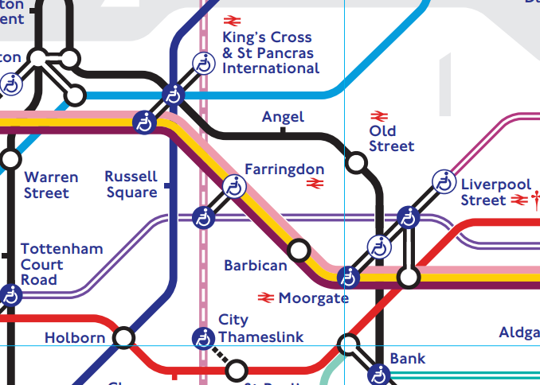

Learning Objectives
Introduction
Quantifying network structure allows us to move from simply visualising connections to measuring influence, importance and flow within complex systems. In this section, we will explore how centrality measures such as degree, closeness and Personalised PageRank provide mathematical insight into node position and functional relevance. Using a real breast cancer protein interaction network as a case study, you will learn how to compute, interpret and visualise these metrics in order to identify influential genes and better understand the structural organisation of biological networks.
In order to study a network, we can measure how its nodes are positioned using centrality scores. A centrality score is a numerical measure of how important a node is, its influence and/or its structural position within a given network.
Degree distribution
In an undirected network, the term degree refers to the number of edges connected to any given node. For a directed network, a degree is subdivided to an in-degree and out-degree.
- In-degree refers to the number of incoming edges to a node.
- Out-degree refers to the number of outgoing edges from a node.
Although the degree can be calculated rather simply by counting the number of edges connected to a given node, this may be difficult for networks that are large. To illustrate this, we will incorporate the example of the Breast Cancer Network graph, at this point in the lesson.
The Breast Cancer Network (BCN)
This is a network generated from a list of 202 mutated genes in breast cancer, identified by Repana et al., 2019. The resulting network was constructed from the STRING protein-protein interaction database, and its 3,696 edge weights were calculated from the evidence-based strength of interactions between its nodes. The next lesson will serve to reveal more information about constructing PPI networks based on lists of genes.
The Breast Cancer Network is given in the data folder of your repository, and is stored as a .csv file. Let's commence by reading this into a Pandas DataFrame, as before. But before that, let's lay out our import statements.
Let's then convert it into a NetworkX graph object.
We can calculate the degree centrality of each node using the NetworkX degree() function.
The degree distribution can then be plotted using NetworkX and matplotlib to give a histogram.
Degree centrality
Degree centrality is the degree of each node normalised by the maximum possible degree that exists within the network. It can be calculated easily using the NetworkX function degree_centrality().
As is evident from the output of the previous cell, the resulting degree centrality is given as a Python dictionary. It is then possible to convert this dictionary into a Pandas DataFrame using the DataFrame.from_dict function.
The resulting network can also then be ranked according the centrality score, as follows:
Closeness centrality
Closeness centrality is another topological measure that is commonly used in analysing a biological network. It measures how close a node is to all other nodes in a graph, based on the amount of flow information that can be measured crossing through a node (i.e. the shortest path). Closeness centrality is particularly useful in identifying nodes that can spread information efficiently throughout a network. In a biological context, an example might be a gene that is in the centre of a network, which is highly connected to other genes, and therefore influential to the connectivity measured across the entire network.
In NetworkX, it is possible to calculate closeness centrality using the function: closeness_centrality(). The results of this calculation are presented, once again, in dictionary format; which w can convert into a DataFrame, as before:
PageRank is a ranking system developed by Google's founder Larry Page in collaboration with Sergey Brin, and is used to identify the most central or interesting node in a network; conceptually, it is relatively similar to closeness centrality. However, PageRank allso accounts for whether the nodes are connected to another important node in the network.
The London underground example
Envision that you are newly settling into London after finding a suitable place to live, close to your workplace. You are exploring London by travelling, at random, across the city using the London Underground (Tube). You can initiate your travel from any station in the Tube network and, while travelling, you decide - by means of a dice toss - which of the neighbouring stations you would like to visit, next.
Suppose you begin this following your arrival at Angel Station. You then toss the dice to decide whether to next visit King's Cross St. Pancras, or Old Street Station, with an equal chance of visiting each station. Your dice throw points to Old Street Station, and you proceed, accordingly. Once you arrive at Old Street, you then toss the dice again to decide whether or not to travel back to Angel, or proceed to Moorgate. In order to prevent the scenario where you get trapped in one part of the Tube network, an occasional random jump or teleportation to any station on the network, is introduced. This allows you to travel across the entire London Underground network. This process then repeats infinitely, leading to the computation of probabilities for being at a specific station, and this is represented as a PageRank score.

PageRank results in a probability independent of the starting station. However, if you work at a particular station such as Angel, you may wish to live near to a station that is closely connected to Angel, and not too far away from it. In order to address this problem, we can then assign Angel a non-zero value, with other stations set to 0; this means that the PageRank algorithm is forcing you back to Angel, every time a random jump occurs. This process then repeats infinitely, and the probability for each station that you take to Angel, is calculated as a Personalised PageRank (PPR) score.
The BCN
In the context of a biological network, we may be interested in nodes that are highly connected to a particular gene, protein or transcription factor, for example. Using the Breast Cancer Network as an example to illustrate this, let's explore nodes within this network that are highly connected to EGFR using the aforementioned PPR score. EGFR is an Epidermal Growth Factor Receptor - a transmembrane receptor which regulates cell growth and proliferation, in which mutations can contribute to the progression of tumours in cancers such as breast cancer.
Fistly, let us observe how we can address the teleportation customisation, using a Python dictionary.
PPR can then be calculated using the pagerank function in NetworkX. As the results are returned in a dictionary, we can use Pandas functions to convert these into a Pandas DataFrame.
The results are arranged alphabetically. Let's have a look at the top 10 nodes from the EGFR PPR analysis.
EGFR is ranked highly, as we have prioritised it in the personalisation. In biological context, we know that EGFR, and other proteins such as p53 and PTEN, are often cooperative in the initiation of tumours and their progression. Having them rank as highly as they do, is consistent with this information.
1.
Calculate the degree centrality of Network 1, and store the result in a Pandas DataFrame.
Summary
In this sections, we moved from constructing networks to quantifying their structure using key centrality measures. We computed degree, degree centrality, and closeness centrality to assess node importance within a biological network, and explored the concept of degree distribution to understand overall connectivity patterns. We introduced PageRank and Personalised PageRank (PPR) as probabilistic ranking algorithms based on a random walk with teleportation, applying them to prioritise biologically relevant genes such as EGFR within a breast cancer interaction network. These metrics provide quantitative tools for identifying influential nodes and interpreting functional organisation in complex systems.